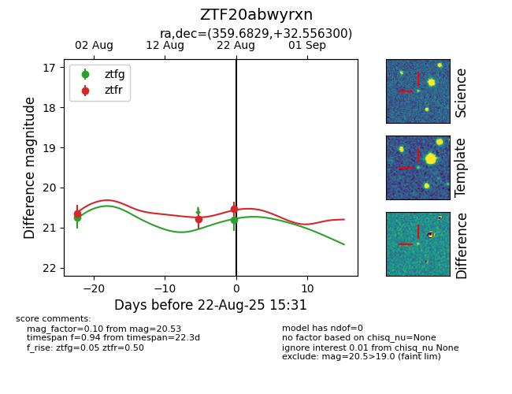

Target ZTF20abwyrxn at 2025-08-22 15:31, see:
FINK: fink-portal.org/ZTF20abwyrxn
Lasair: lasair-ztf.lsst.ac.uk/objects/ZTF20abwyrxn
ALeRCE: alerce.online/object/ZTF20abwyrxn
alt names
ZTF20abwyrxn (ztf,alerce)
coordinates:
equatorial (ra, dec) = (359.6829,+32.55630)
galactic (l, b) = (110.2403,-29.01319)
photometry
last ztfg=20.81, ztfr=20.53
2 ztfg, 3 ztfr detections
